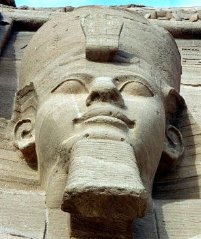

Antik Mısır tarihinin belki de en önemli firavunu olan II. Ramses, Mısır tarihinin Yeni Krallık hanedanlığı döneminde uzun yıllar tahtta kalarak Eski Mısır tarihine damgasını vurmuştur.
Nil nehri kıyısında kurulan Mısır, tarıma elverişli arazisi ile eski dünyanın medeniyet merkezlerinden biridir. Dünyanın en eski medeniyet ve kültürüne ev sahibi yapması ile Mısır, öteden beri değişik kavimlerin çekim merkezi olmuş ve sürekli dışarıdan göç almıştır. Kuzey ve doğusunun denizle, Batı ve güneyinin ise çöl ve Afrika’nın görece az nüfuslu Afrika toprakları ile çevrili olması Mısır’ın dış dünya ilişkilerinin sınırlı gelişmesine yol açmış, bu durum Mısır medeniyetinin diğer uygarlık ve medeniyetlere oranla dış etkilere daha az açık olmasını sağlamıştır. Tıpkı Mısır gibi eski uygarlık merkezi olan Anadolu ve Mezopotamya doğu batı geçiş yolları üzerinde olması nedeniyle dış tehditlere ve etkilere daha açık bir medeniyet merkezidir. Bu bölgeler tarihler boyu istilalara, savaşlara ve egemenlik mücadelelerine sahne olmuştur. Ancak doğu batı geçiş yollarının uzağında kalan ve eski dünyanın güney ucunu teşkil eden Mısır’da, Mezopotamya ve Anadolu’daki hareketlilik gözlenmez. Bu durum, Mısır medeniyetini daha içe kapalı ve deyim yerinde ise kendi yağında kavrulan bir uygarlık haline getirmiştir. Mısır’ın bu coğrafi konumu sosyal, ekonomik, dinsel ve kültürel şekilleniş üzerinde de belirleyicidir. Mısır’daki toplumsal hareketlerin yankısı yine Mısır’la kalmış, en fazla komşu bölgeler olan Nübya, Kenaneli ve Hitit devletine ulaşmıştır.
Medeniyetin en eski bölgelerinden biri olması nedeniyle eski Mısır, dışardan sürekli göç alan bir bölge olmuştur. Hiksos göçleri, İbrani göçleri, tarihin ilerleyen aşamalarında Çerkez göçleri bunun göstergesidir. Bu nedenle Mısır medeniyeti kendi yatağını kazan, hanedanlık dönemlerinin tüm yayılmacı politikalarına rağmen genişlemekten çok derinleşen bir medeniyettir. Onun bu kapalı karakteri toplumsal şekilleniş üzerinde de belirleyicidir. Bu yüzden eski Mısır’da inanç sistemleri, iktidar biçimleri, sınıfsal ayrışmalar katı ve serttir. Bu en somut olarak kendini, II. Ramses’in iktidar icraatlarında kendini göstermektedir.
Mısır Medeniyeti eski dünyanın en köklü birkaç medeniyet merkezinden biri olarak canlı bir siyasal yaşam sürmüştür. Nüfus bakımından cazibe merkezi olması, Nil Deltası’nda gelişen tarım üretimi etrafındaki katı sınıflaşma Mısır’da iç çatışmaları, siyasal mücadeleleri ve iktidar kavgalarını sürekli diri tuttu. Bu nedenledir ki, Mısır antik tarihi farklı isimlerle anılan hanedanlık dönemlerini yaşadı. Her hanedanlık dönemini, kaos ve fetret devri olarak nitelendirebileceğimiz bir ara dönem izledi. Bu ara dönemler, bir hanedanlık devrilirken kurulacak olan yeni hanedanlığın doğum dönemleriydi. Bu dönemler Mısır’da iç çatışmalar doruk noktasına ulaştığı, tıpkı zincirin halkaları gibi bir düzenden başka bir düzene geçişin bağlantı noktaları olmuştur.
Mısır’da hanedanlık dönemlerinin belki de en görkemlisi II. Ramses döneminde yaşanmıştır. II. Ramses, askeri ve siyasi zekâsının yanı sıra acımasız ve hırslı bir firavundur. Uzun yıllar ülkeyi koyu bir baskı ve sömürü altında yönetirken, Antik Mısır’ın en görkemli çağına da damgasını vurmuştur.
II. Ramses büyük devlet idaresinin ancak güçlü bir ordu ve din adamlarının desteğini almaktan geçtiğini fark etmişti. Bu yüzden ordunun her koşulda firavuna bağlı ve sert disiplinli olmasına büyük özen gösteriyordu. Sosyal hayatın en ayrıcalıklı sınıfı olarak adlandırılabilecek Teb’li Amon ruhbanları ise II. Ramses’in en önemli destekçileri olmuşlardır. II. Ramses, bu bakımdan dinde reform ve yeni din kurma çalışmaları karşısında her zaman eski geleneksel Amon dininin temsilcisi ve savunucu oldu. Onun döneminde ruhbanların idaresindeki uçsuz bucaksız tapınak topraklarında on binlerce köle çalıştırılıyordu. Teb’li yüksek rahipler sosyal hayatta olduğu gibi siyasi ve ekonomik hayatta da önemli bir güç merkezi oldular. Bu nüfuzlarını kaybetmemek için de II. Ramses’in muhafazakâr ve geleneği sürdüren politikalarının en hararetli destekçisi bu sınıftı.
II. Ramses, Mısır’da merkezi iktidarının en güçlü dönemlerini yaşarken Nüpya, Ortadoğu ve Ön Asya’da da kolonizasyon politikaları izleyerek bölgesel nüfuzun yaymaya çalıştı. Tarihin ilk yazılı antlaşması ile sonuçlanan Kadeş Savaşı da bu egemenlik mücadelesinin bir sonucu olarak ortaya çıktı.
II. Ramses döneminde İç Anadolu Hitit devletinin egemenliği altındaydı. Görkemli biri imparatorluk haline gelerek Doğu Anadolu ve Suriye’de kolonilere sahip olan Hititliler, II. Ramses’in bölgesel egemenlik mücadelesinde rakip olan tek devletti. Bu yüzden II. Ramses, kimi zaman siyasi ilişkiler kurarak kimi zaman da askeri politikalarla Hitit İmparatorluğu ile sürekle bir çatışma ve rekabet halinde bulunmuştur. Ancak Hititlerle yapılan savaşlarda II. Ramses’in istediğini aldığı söylenemez. Kadeş Savaşı bu bakımdan bir kırılma noktasıdır. II. Ramses her ne kadar Ebu Simbel tapınağındaki kitabelerde kendini savaşın galibi ilan etse de, savaş sonunda, savaş sebebi olan Suriye kolonileri Mısır egemenliğinden tekrar Hitit egemenliğine geçmiştir. Hal böyle iken, II. Ramses’in Ebu Simbel tapınağındaki yazıtlarda kendini Kadeş kahramanı olarak ilan etmesi Asur tehdidi ile görece hafif atlatılan yenilgi koşullarını uyruklarından gizleyerek Mısır’ın iç çatışmalarını önlemek ve tarihe adını muzaffer firavun olarak yazdırma kaygısı olmalıdır.

II . Ramses’in Ebu Simbel’deki heykeli.
II. Ramses dönemi, Yeni krallığın dinsel reform taleplerinin ve yeni dinsel inançların kuruluş sürecine denk gelmiştir. Döneminden yaklaşık elli yıl önce yaşanan ve başarısızlıkla sonuçlanan ilk tek tanrılı din Atonizm’in ardından, bu kez semavi ve tek tanrılı bir din olarak doğan Musevilik (Yahudilik) Mısır’da sonradan yerleşen ve en ağır angarya işlerde çalıştırılan İsrailoğulları tarafından geniş destek görmeye başlamıştır. Zira geleneksel Amon dini artık halkın sosyal ve dinsel beklentilerine cevap vermiyordu. Aksine acımasız baskı ve sömürü koşullarında mevcut iktidarın ve ayrıcalıklı rahiplerin baskı ve zulmünü tanrı buyruğu gibi sunan ideolojik bir manüplasyon aracına dönüşmüştü. Halk baskı ve zulüm altında inlerken, saray ve onun çevresindeki din ve devlet bürokrasisi şatafatlı bir hayat yaşamaktadır. Bu sınıfsal uçurum Yeni krallığın en güçlü hanedanlığı olan II. Ramses döneminde yeni bir düşüşün habercisi olmuştur. II. Ramses döneminde başlayan Musevilik hareketi, bu düşüşün miladıdır.
Aton dininin tek tanrı anlayışını göksel bir tanrı inancıyla birleştiren Musevilik, kısa süre içinde ayrıcalıklı Kıpti hanedanlığına karşı yoksul İsrailoğulları’nın umudu haline geldi. Öyle ki, II. Ramses, bir yandan İsrailoğulları’nı angarya işlerinde köle olarak çalıştırırken, öte yandan yakın gelecekte İsrailoğulları’nın iktidarını tehdit edeceğinden korktuğundan İsrailoğulları kavminden doğan tüm erkek çocuklarının öldürülmesini emretti. Ancak bu karar Mısır hanedanlığı için fasit bir daire oluşturuyordu. Nitekim ağır İsrailoğulları kavminin soyu kuruması halinde angaryada çalıştıracak nüfus bulunamayacaktı. Bu nedenle II. Ramses, devlet bürokratlarının da uyarısı ile bu emrini esneterek erkek çocuklarının bir yıl öldürülmesi, bir yıl sağ kalması kararını vermiştir. Bu kararın bile bir kavim açısından kabullenilmesinin ne denli zor olduğu açıktır ve II. Ramses’in nasıl bir despotik rejim kurduğu hakkında da yeterli bir fikir vermektedir.
II. Ramses ile Hz. Firavun arasında geçen mücadele hem genel tarihin hem de dinler tarihinin en tartışmalı konusu olagelmiştir. Bu konuların başında da Hz. Musa ve İsrailoğulları kavmini kovalarken Kızıldeniz’de boğulan firavunun II. Ramses olup olmadığı konusu gelmektedir. Müslüman dünyasında Kur’an-ı Kerim ve Tevrat’ta söz edilen firavunun II. Ramses olduğuna dair yaygın bir kanı vardır. Bu görüşün sahipleri, kanaatlerine El-A’râf, Tâhâ, El-Kasas surelerinin ayetlerini delil olarak göstermektedirler. Hatta bu fikrin savunucuları, Nil kıyılarında bir tepecikte secdeye durmuş halde bulunan ve bugün British Museum’da sergilenen mumyanın, II. Ramses’e ait olduğunu; II. Ramses’in Kızıldeniz mucizesini gördükten sonra ölmeden kısa bir süre önce secde ederek imana geldiğini ve Allah’ın, ‘ibreti alem olsun’ diye Ramses’in cesedinin secde halinde duran mumyasını koruduğunu ileri sürmektedirler. Buna delil olarak da Yunus Suresi’ni göstermektedirler.
Ne var ki, bu ayetlerde II. Ramses’in ismi açık olarak zikredilmemekte, genel bir firavun kavramından söz edilmektedir. II. Ramses’in Hz. Musa ile çağdaş olduğu, Hz. Musa’nın firavun sarayında büyüdüğü, Museviliğin II. Ramses döneminde ortaya çıkan bir din olduğu ve Mısır’da Hz. Musa ve Hz. Harun’un II. Ramses ise mücadeleye girdikleri; bu düşünceye karşı çıkan tarihçiler tarafından da kabul edilmektedir. Ancak bu tarihçiler aynı zamanda, Hz. Musa’nın henüz Medyen’den dönmeden II. Ramses’in öldüğünü, Kızıldeniz olayının firavunun Merneptah döneminde yaşadığını kronolojik karşılaştırmalarla ispatlamaktadırlar. Kaldı ki, II. Ramses’in mumyasının 1881 yılında Krallar Vadisi’nde bir kuyuda bulunduğu ve o günden beridir de Kahire Müzesi’nde sergilendiği bilinen bir gerçektir. Öte yandan British Museum’da sergilenen mumyanın Mısır’da bulunduğu ancak sıradan bir köylüye ait olduğu iklim ve coğrafi koşullar nedeniyle doğal mumyalanma yöntemi ile mumya haline geldiği İngiliz Arkeologlarca teyit edilmiştir.
II. Ramses’in kendini tanrı olarak ilan etmesi, halen güncelliğini koruyan bir konudur. II. Ramses şahıs olarak kendini tanrı ilan etmiş bir firavun değildir. Bu iddia, Amon dini ve geleneklerine bağlı II. Ramses’in inanç sisteminin firavunu tanrılaştırdığı fikrinden hareketle ortaya atılan yorumsal bir iddiadır. Amon dini Amon, Ra, Ptah ve Suketh gibi put tanrıları olan politeist bir dindir ve II. Ramses, Kadeş Savaşı’na girerken tanrıların koruyucu gücünü yanında hissetmek için birliklerine Amon, Ra, Ptah ve Suketh tanrı isimlerini vermiş, kendisi de Ra birliklerinin başında savaşa katılmıştır. II. Ramses’in Amon birliklerin komuta etmesi, Amon’nun en büyük Mısır tanrısı olmasıyla ilgilidir. Amon dininde firavunlar tanrının oğlu olarak kabul ediliyor ve tanrısallık kültü ile onurlandırılıyorlardı. Bu durum, tek tanrıcı Musevilik tarafından Yehova’ya (Allah’a) şirk koşmak ve ölümlü insanı tanrı katına yükseltmek anlamında yorumlanmıştır. Ancak bu inanış, Mısır’da II. Ramses döneminde ortaya çıkan bir inanış değildir. II. Ramses öncesi firavunları da aynı kültle onurlandırılmışlardır. Yani firavunun tanrını oğlu ve hizmetkârı olması düşüncesi Amon inanç sisteminin içinde vardır.
II. Ramses, Mısır firavunları içinde en uzun süre firavun tahtında oturan firavunlardan biridir ve gerek kişiliği, gerek Yeni krallık döneminde Mısır hanedanlığını ulaştırdığı nokta ile firavunlar çağının belki de en görkemli firavunudur. Hakkında yapılan tartışmaların bugün bile sürmesi, II. Ramses’in hayatının halen romanlara, sinema filmlerine konu olması; gerek dönemindeki olayların gerekse cesedinin bile tartışma konusu yapılması onun tarihsel kişiliğinin ne denli güçlü ve önemli olduğunu göstermektedir.